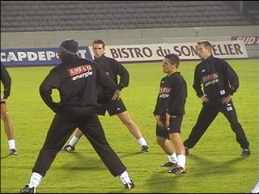
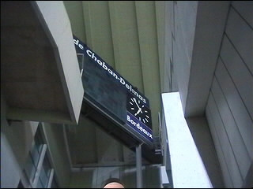
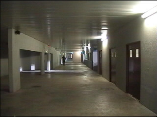
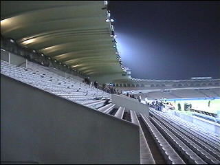
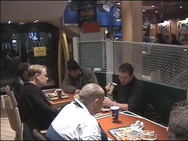
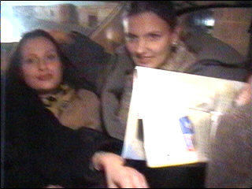
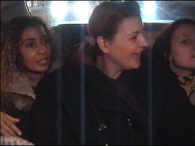
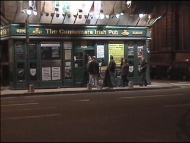
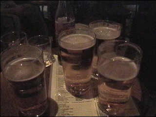

| FC Girondins de Bordeaux - Roda JC 1-0 20 november 2001 |
|1-10|11-20|21-30|31-40|41-50|51-59|

De door blessures en interlandverplichtingen uitgedunde selectie aan het werk.

Een van de twee scoreborden.

De bovenste omloop.

De lange zuid-zijde met linksboven de armetierige skyboxen.

De kou verdreef de fans al gauw naar MacDonalde.

Na het happy meal gingen we naar de Irish Pub en testten we hoeveel Roda-meëdsjer
er op de achterbank van de Koempelcab passen.

Bij het uitstappen ontstond er een kleine file....

De Irish Pub werd omgedoopt tot Roda-café. Hier heerste geel en zwart!

Net toen het gezellig was haalden ze het karaoke-speelgoed uit de kast. Hier
is de zanger van Ramstein aan de beurt.

De WSU-gasten hadden iets geregeld met de eigenaar van de kroeg zodat we
korting kregen bij bestelling van 5 halve hanen. Je kon zelfs met Nederlands
geld betalen.